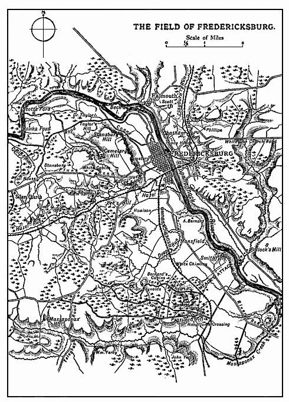

1862. October While the Army of Northern Virginia was resting in the Valley, McClellan was preparing for a winter campaign. He was unable, however, to keep pace with the impatience of the Northern people. Not only was he determined to postpone all movement until his army was properly equipped, his ranks recruited, his cavalry remounted, and his administrative services reorganised, but the military authorities at Washington were very slow in meeting his demands. Notwithstanding, then, the orders of the President, the remonstrances of Halleck, and the clamour of the press, for more than five weeks after the battle of Sharpsburg he remained inactive on the Potomac. It may be that in the interests of the army he was perfectly right in resisting the pressure brought to bear upon him. He was certainly the best judge of the temper of his troops, and could estimate more exactly than either Lincoln or Halleck the chances of success if he were to encounter Lee’s veterans on their native soil. However this may be, his inaction was not in accordance with the demands of the political situation. The President, immediately the Confederates retired from Maryland, had taken a step which changed the character of the war. Hitherto the Northerners had fought for the restoration of the Union on the basis of the Constitution, as interpreted by themselves. Now, after eighteen months of conflict, the Constitution was deliberately violated. For the clause which forbade all interference with the domestic institutions of the several States, a declaration that slavery should no longer exist within the boundaries
STUART’S RIDE 290
of the Republic was substituted, and the armies of the Union were called upon to fight for the freedom of the negro.
In the condition of political parties this measure was daring. It was not approved by the Democrats, and many of the soldiers were Democrats; or by those—and they were not a few—who believed that compromise was the surest means of restoring peace; or by those—and they were numerous—who thought the dissolution of the Union a smaller evil than the continuance of the war. The opposition was very strong, and there was but one means of reconciling it—vigorous action on the part of the army, the immediate invasion of Virginia, and a decisive victory. Delay would expose the framers of the measure to the imputation of having promised more than they could perform, of wantonly tampering with the Constitution, and of widening the breach between North and South beyond all hope of healing.
In consequence, therefore, of McClellan’s refusal to move forward, the friction between the Federal Government and their general-in-chief, which, so long as Lee remained in Maryland, had been allayed, once more asserted its baneful influence; and the aggressive attitude of the Confederates did not serve to make matters smoother. Although the greater part of October was for the Army of Northern Virginia a period of unusual leisure, the troops were not altogether idle. As soon as the stragglers had been brought in, and the ranks of the divisions once more presented a respectable appearance, various enterprises were undertaken. The Second Army Corps was entrusted with the destruction of the Baltimore and Ohio Railway, a duty carried out by Jackson with characteristic thoroughness. The line from Harper’s Ferry to Winchester, as well as that from Manassas Junction to Strasburg, were also torn up; and the spoils of the late campaign were sent south to Richmond and Staunton. These preparations for defensive warfare were not, however, so immediately embarrassing to the enemy as the action of the cavalry. Stuart’s three brigades, after the affair at
STUART’S RIDE 291
Boteler’s Ford, picketed the line of the Potomac from the North Mountain to the Shenandoah, a distance of forty miles: Hampton’s brigade at Hedgesville, Fitzhugh Lee’s at Shepherdstown, Munford’s at Charlestown, and headquarters near Leetown.
On October 8 General Lee, suspecting that McClellan was meditating some movement, ordered the cavalry to cross the Potomac and reconnoitre.
Oct. 9 Selecting 600 men from each of his brigades, with General Hampton, Colonels W. H. F. Lee and W. E. Jones in command, and accompanied by four horse-artillery guns, Stuart rendezvoused on the night of the 9th at Darkesville. As the day dawned he crossed the Potomac at McCoy’s Ford, drove in the Federal pickets, and broke up a signal station near Fairview.
Oct. 10 Marching due north, he reached Mercersburg at noon, and Chambersburg, forty-six miles from Darkesville, at 7 p.m. on October 10. Chambersburg, although a Federal supply depôt of some importance, was without a garrison, and here 275 sick and wounded were paroled, 500 horses requisitioned, the wires cut, and the railroad obstructed; while the machine shops, several trains of loaded cars, and a large quantity of small arms, ammunition, and clothing was destroyed.
Oct. 11 At nine the next morning the force marched in the direction of Gettysburg, moving round the Federal rear. Then, crossing the mountains, it turned south through Emmittsburg, passed the Monocacy near Frederick, and after a march of ninety miles since leaving Chambersburg reached Hyattstown at daylight on the 12th.
Oct.12 Here, on the road which formed McClellan’s line of communication with Washington, a few waggons were captured, and information came to hand that 4,000 or 5,000 Federal troops were near Poolesville, guarding the fords across the Potomac. Moving at a trot through the woods, the column, leaving Poolesville two or three miles to the left, made for the mouth of the Monocacy. About a mile and a half from that river an advanced guard of hostile cavalry, moving eastward, was encountered and driven in. Colonel Lee’s men were
STUART’S RIDE 292
dismounted, a gun was brought into action, and under cover of this screen, posted on a high crest, the main body made a dash for White’s Ford. The point of passage, although guarded by about 100 Federal riflemen, was quickly seized, and Stuart’s whole force, together with the captured horses, had completed the crossing before the enemy, advancing in large force from the Monocacy, was in a position to interfere.
This brilliantly conducted expedition was as fruitful of results as the ride round McClellan’s army in the previous June. The information obtained was most important. Lee, besides being furnished with a sufficiently full report of the Federal dispositions, learned that no part of McClellan’s army had been detached to Washington, but that it was being reinforced from that quarter, and that therefore no over-sea expedition against Richmond was to be apprehended. Several hundred fine horses from the farms of Pennsylvania furnished excellent remounts for the Confederate troopers. Prominent officials were brought in as hostages for the safety of the Virginia citizens who had been thrown into Northern prisons. Only a few scouts were captured by the enemy, and not a man was killed. The distance marched by Stuart, from Darkesville to White’s Ford, was one hundred and twenty-six miles, of which the last eighty were covered without a halt. Crossing the Potomac at McCoy’s Ford about 6 a.m. on October 10, he had recrossed it at White’s Ford, between 1 and 2 p.m. on October 12; he was thus for fifty-six hours inside the enemy’s lines, and during the greater part of his march within thirty miles of McClellan’s headquarters near Harper’s Ferry.
It is often the case in war that a well-planned and boldly executed enterprise has a far greater effect than could possibly have been anticipated. Neither Lee nor Stuart looked for larger results from this raid than a certain amount of plunder and a good deal of intelligence. But skill and daring were crowned with a more ample reward than the attainment of the immediate object.
In the first place, the expedition, although there was little fighting, was most destructive to the Federal cavalry.
STUART’S RIDE 293
McClellan had done all in his power to arrest the raiders. Directly the news came in that they had crossed the Potomac, troops were sent in every direction to cut off their retreat. Yet so eminently judicious were Stuart’s precautions, so intelligent the Maryland soldiers who acted as his guides, and so rapid his movements, that although constant reports were received by the Federal generals as to the progress and direction of his column, the information came always too late to serve any practical purpose, and his pursuers were never in time to bar his march. General Pleasanton, with such cavalry as could be spared from the picket line, marched seventy-eight miles in four-and-twenty hours, and General Averell’s brigade, quartered on the Upper Potomac, two hundred miles in four days. The severity of the marches told heavily on these commands, already worn out by hard work on the outposts; and so many of the horses broke down that a period of repose was absolutely necessary to refit them for the field. Until his cavalry should have recovered it was impossible for McClellan to invade Virginia.
In the second place, neither the Northern Government nor the Northern people could forget that this was the second time that McClellan had allowed Stuart to ride at will round the Army of the Potomac. Public confidence in the general-in-chief was greatly shaken; and a handle was given to his opponents in the ranks of the abolitionists, who, because he was a Democrat, and had much influence with the army, were already clamouring for his removal.
Oct. 26 The respite which Stuart had gained for Virginia was not, however, of long duration. On October 26, McClellan, having ascertained by means of a strong reconnaissance in force that the Confederate army was still in the vicinity of Winchester, commenced the passage of the Potomac. The principal point of crossing was near Berlin, and so soon as it became evident that the Federal line of operations lay east of the Blue Ridge, Lee ordered Longstreet to Culpeper Court House. Jackson, taking post on the road between Berryville and Charlestown, was to remain in the Valley.
THE SITUATION 294
On November 7 the situation was as follows:—
ARMY OF THE POTOMAC.
| First Corps Second Corps Third Corps Fifth Corps Ninth Corps Eleventh Corps Cavalry Division Line of Supply Twelfth Corps |
Warrenton. Rectortown. Between Manassas Junction and Warrenton. White Plains. Waterloo. New Baltimore. Rappahannock Station and Sperryville. Orange and Alexandria and Manassas Railways. Harper’s Ferry and Sharpsburg. |
ARMY OF NORTHERN VIRGINIA.
| First Corps Second Corps Cavalry Division Lines of Supply |
Culpeper Court House. Headquarters, Millwood. Hampton’s and Fitzhugh Lee’s Brigades on the Rappahannock. Munford’s Brigade with Jackson. Staunton—Strasburg. Staunton—Culpeper Court House. Richmond—Gordonsville. |
Nov. 7 On this date the six corps of the Army of the Potomac which were assembled between the Bull Run Mountains and the Blue Ridge numbered 125,000 officers and men present for duty, together with 320 guns.
The returns of the Army of Northern Virginia give the following strength:—
| Guns | |||
| First Army Corps Second Army Corps Cavalry Division Reserve Artillery |
31,939 31,794 7,176 900 ——— 71,809 |
112 123 4 36 —— 275 |
(54 short-range smooth-bores) (53 short-range smooth-bores) (20 short-range smooth-bores) |
The Confederates were not only heavily outnumbered by the force immediately before them, but along the Potomac, from Washington westward, was a second hostile army, not indeed so large as that commanded by
LINCOLN’S STRATEGY 295
McClellan, but larger by several thousands than that commanded by Lee. The Northern capital held a garrison of 80,000; at Harper’s Ferry were 10,000; in the neighbourhood of Sharpsburg over 4,000; along the Baltimore and Ohio Railroad 8,000. Thus the total strength of the Federals exceeded 225,000 men. Yet in face of this enormous host, and with Richmond only weakly garrisoned behind him, Lee had actually separated his two wings by an interval of sixty miles. He was evidently playing his old game, dividing his army with a view to a junction on the field of battle.
Lincoln, in a letter of advice with which he had favoured McClellan a few days previously, had urged the importance of making Lee’s line of supply the first objective of the invading army. “An advance east of the Blue Ridge,” he said, “would at once menace the enemy’s line of communications, and compel him to keep his forces together; and if Lee, disregarding this menace, were to cut in between the Army of the Potomac and Washington, McClellan would have nothing to do but to attack him in rear.” He suggested, moreover, that by hard marching it might be possible for McClellan to reach Richmond first.
The Confederate line of communications, so the President believed, ran from Richmond to Culpeper Court House, and McClellan’s advanced guards, on November 7, were within twenty miles of that point. Lee, however, had altogether failed to respond to Mr. Lincoln’s strategical pronouncements. Instead of concentrating his forces he had dispersed them; and instead of fearing for his own communications, he had placed Jackson in a position to interfere very seriously with those of his enemy.
Mr. Lincoln’s letter to McClellan shows that the lessons of the war had not been altogether lost upon him. Generals Banks and Pope, with some stimulus from Stonewall Jackson, had taught him what an important part is played by lines of supply. He had mastered the strategical truism that an enemy’s communications are his weakest point. But there were other considerations which had not come home to him. He had overlooked the possibility
LINCOLN’S STRATEGY 296
that Lee might threaten McClellan’s communications before McClellan could threaten his; and he had yet to learn that an army operating in its own country, if proper forethought be exercised, can establish an alternative line of supply, and provide itself with a double base, thus gaining a freedom of action of which an invader, bound, unless he has command of the sea, to a single line, is generally deprived.
The President appears to have thought that, if Lee were cut off from Richmond, the Army of Northern Virginia would be reduced to starvation, and become absolutely powerless. It never entered his head that the astute commander of that army had already, in anticipation of the very movement which McClellan was now making, established a second base at Staunton, and that his line of supply, in case of necessity, would not run over the open country between Richmond and Gordonsville, but from Staunton to Culpeper, behind the ramparts of the Blue Ridge.
Lee, in fact, accepted with equanimity the possibility of the Federals intervening between himself and Richmond. He had already, in the campaign against Pope, extricated himself from such a situation by a bold stroke against his enemy’s communications; and the natural fastness of the Valley, amply provided with food and forage, afforded facilities for such a manœuvre which had been altogether absent before the Second Manassas. Nor was he of Mr. Lincoln’s opinion, that if the Army of Northern Virginia cut in between Washington and McClellan it would be a simple operation for the latter to about face and attack the Confederates in rear. He knew, and Mr. Lincoln, if he had studied Pope’s campaign, should have known it too, that the operation of countermarching, if the line of communication has been cut, is not only apt to produce great confusion and great suffering, but has the very worst effect on the moral of the troops. But Lee had that practical experience which Mr. Lincoln lacked, and without which it is but waste of words to dogmatise on strategy. He was well aware that a large army is a cumbrous machine, not readily deflected from the original
CONCENTRATION DEFERRED 297
direction of the line of march;1 and, more than all, he had that intimate acquaintance with the soldier in the ranks, that knowledge of the human factor, without which no military problem, whether of strategy, tactics, or organisation, can be satisfactorily solved. McClellan’s task, therefore, so long as he had to depend for his supplies on a single line of railway, was not quite so simple as Mr. Lincoln imagined.
Nevertheless, on November 7 Lee decided to unite his army. As soon as the enemy advanced from Warrenton, Jackson was to ascend the Valley, and crossing the Blue Ridge at Fisher’s Gap, join hands with Longstreet, who would retire from Madison Court House to the vicinity of Gordonsville. The Confederates would then be concentrated on McClellan’s right flank should he march on Richmond, ready to take advantage of any opportunity for attack; or, if attack were considered too hazardous, to threaten his communications, and compel him to fall back to the Potomac.
The proposed concentration, however, was not immediately carried out. In the first place, the Federal advance came to a sudden standstill; and, in the second place, Jackson was unwilling to abandon his post of vantage behind the Blue Ridge. It need hardly be said that the policy of manœuvring instead of intrenching, of aiming at the enemy’s flank and rear instead of barring his advance directly, was in full agreement with his views of war; and it appears that about this date he had submitted proposals for a movement against the Federal communications. It would be interesting indeed to have the details of his design, but Jackson’s letter-book for this period has unfortunately disappeared, nor did he communicate his ideas to any of his staff. Letters from General Lee, however, indicate that the manœuvre proposed was of the same character as
1 On November 1 the Army of the Potomac (not including the Third Corps) was accompanied by 4,818 waggons and ambulances, 8,500 transport horses, and 12,000 mules. O.R., vol. xix, part i, pp. 97–8. The train of each army corps and of the cavalry covered eight miles of road, or fifty miles for the whole.
CONCENTRATION DEFERRED 298
that which brought Pope in such hot haste from the Rappahannock to Bull Run, and that it was Jackson’s suggestion which caused the Commander-in-Chief to reconsider his determination of uniting his army.
“As long as General Jackson,” wrote Lee to the Secretary of War on November 10, “can operate with safety, and secure his retirement west of the Massanutton Mountains, I think it advantageous that he should be in a position to threaten the enemy’s flank and rear, and thus prevent his advance southward on the east side of the Blue Ridge. General Jackson has been directed accordingly, and should the enemy descend into the Valley, General Longstreet will attack his rear, and cut off his communications. The enemy apparently is so strong in numbers that I think it preferable to baffle his designs by manœuvring, rather than resist his advance by main force, To accomplish the latter without too great a risk and loss would require more than double our present numbers.”1
His letter to Jackson, dated November 9, ran as follows: “The enemy seems to be massing his troops along the Manassas Railroad in the vicinity of Piedmont, which gives him great facilities for bringing up supplies from Alexandria. It has occurred to me that his object may be to seize upon Strasburg with his main force, to intercept your ascent of the Valley. . . . This would oblige you to cross into the Lost River Valley, or west of it, unless you could force a passage through the Blue Ridge; hence my anxiety for your safety. If you can prevent such a movement of the enemy, and operate strongly on his flank and rear through the gaps of the Blue Ridge, you would certainly in my opinion effect the object you propose. A demonstration of crossing into Maryland would serve the same purpose, and might call him back to the Potomac. As my object is to retard and baffle his designs, if it can be accomplished by manœuvring your corps as you propose, it will serve my purpose as well as if effected in any other way. With this understanding, you can use your discretion, which I know I can rely upon, in remaining or advancing up the
1 O.R., vol. xix, part ii, p. 711.
McCLELLAN SUPERSEDED 299
Valley. Keep me advised of your movements and intentions; and you must keep always in view the probability of an attack upon Richmond from either north or south, when a concentration of force will become necessary.”1
Jackson’s plan, however, was not destined to be tried. McClellan had issued orders for the concentration of his army at Warrenton. His troops had never been in better condition. They were in good spirits, well supplied and admirably equipped. Owing to the activity of his cavalry, coupled with the fact that the Confederate horses were at this time attacked by a disease which affected both tongue and hoof, his information was more accurate than usual. He knew that Longstreet was at Culpeper, and Jackson in the Valley. He saw the possibility of separating the two wings of the enemy’s forces, and of either defeating Longstreet or forcing him to fall back to Gordonsville, and he had determined to make the attempt.
On the night of November 7, however, at the very moment when his army was concentrating for an advance against Longstreet, McClellan was ordered to hand over his command to General Burnside. Lincoln had yielded to the insistence of McClellan’s political opponents, to the rancour of Stanton, and the jealousy of Halleck. But in sacrificing the general who had saved the Union at Sharpsburg he sacrificed the lives of many thousands of his soldiers. A darker day than even the Second Manassas was in store for the Army of the Potomac. McClellan was not a general of the first order. But he was the only officer in the United States who had experience of handling large masses of troops, and he was improving every day. Stuart had taught him the use of cavalry, and Lee the value of the initiative. He was by no means deficient in resolution, as his march with an army of recently defeated men against Lee in Maryland conclusively proves; and although he had never won a decisive victory, he possessed, to a degree which was never attained by any of his successors, the confidence and affection of his troops. But deplorable
1 O.R., vol. xix, part ii, p. 705.
McCLELLAN SUPERSEDED 300
as was the weakness which sanctioned his removal on the eve of a decisive manœuvre, the blunder which put Burnside in his place was even more so. The latter appears to have been the protégé of a small political faction. He had many good qualities. He was a firm friend, modest, generous, and energetic. But he was so far from being distinguished for military ability that in the Army of the Potomac it was very strongly questioned whether he was fit to command an army corps. His conduct at Sharpsburg, where he had been entrusted with the attack on the Confederate right, had been the subject of the severest criticism, and by not a few of his colleagues he was considered directly responsible for the want of combination which had marred McClellan’s plan of attack. More than once Mr. Lincoln infringed his own famous aphorism, “Never swap horses when crossing a stream,” but when he transferred the destinies of the Army of the Potomac from McClellan to Burnside he did more—he selected the weakest of his team of generals to bear the burden.
At the same time that McClellan was superseded, General FitzJohn Porter, the gallant soldier of Gaines’ Mill and Malvern Hill, probably the best officer in the Army of the Potomac, was ordered to resign command of the Fifth Army Corps, and to appear before a court-martial on charges of incompetency and neglect of duty at the Second Manassas. The fact that those charges were preferred by Pope, and that Porter had been allowed to retain his command through the campaign in Maryland, were hardly calculated to inspire the army with confidence in either the wisdom or the justice of its rulers; and it was the general opinion that his intimate friendship with McClellan had more to say to his trial than his alleged incompetency.
Burnside commenced his career by renouncing the enterprise which McClellan had contemplated. Longstreet was left unmolested at Culpeper; and, in order to free the communications from Jackson, the Federal army was marched eastward along the Rappahannock to Falmouth, a new line of supply being established between that village
RAPID MARCH OF THE FEDERALS 301
and Aquia Creek, the port on the Potomac, six hours’ sail from Washington.
Lee had already foreseen that Jackson’s presence in the Valley might induce the Federals to change their line of operations. Fredericksburg, on the south side of the Rappahannock, and the terminus of the Richmond and Potomac Railroad, had consequently been garrisoned by an infantry regiment and a battery, while three regiments of cavalry patrolled the river. This force, however, was not posted on the Rappahannock with a view of retarding the enemy’s advance, but merely for observation. Lee, at this date, had no intention of concentrating at Fredericksburg. The Federals, if they acted with resolution, could readily forestall him, and the line of the North Anna, a small but difficult stream, thirty-six miles south, offered peculiar advantages to the defence.
Nov. 17 The Federal march was rapid. On November 15 the Army of the Potomac left Warrenton, and the advanced guard reached Falmouth on the afternoon of the 17th. General Sumner, in command, observing the weakness of the Confederate garrison, requested permission from Burnside to cross the Rappahannock and establish himself on the further bank. Although two army corps were at hand, and the remainder were rapidly closing up, Burnside refused, for the bridges had been broken, and he was unwilling to expose part of his forces on the right bank with no means of retreat except a difficult and uncertain ford. The same day, part of Longstreet’s corps and a brigade of cavalry were sent to Fredericksburg; and on the 19th, Lee, finding that the Federals had left Warrenton, ordered Longstreet to concentrate his whole force at Fredericksburg, and summoned Jackson from the Valley to Orange Court House.
Jackson, meanwhile, had moved to Winchester, probably with the design of threatening the enemy’s garrisons on the Potomac, and this unexpected movement had caused much perturbation in the North. Pennsylvania and Maryland expected nothing less than instant invasion. The merchant feared for his strong-box, the farmer for
RAPID MARCH OF THE FEDERALS 302
his herds; plate was once more packed up; railway presidents demanded further protection for their lines; generals begged for reinforcements, and, according to the “Times” Correspondent, it was “the universal belief that Stonewall Jackson was ready to pounce upon Washington from the Shenandoah, and to capture President, Secretaries, and all.” But before apprehension increased to panic, before Mr. Lincoln had become infected by the prevailing uneasiness, the departure of the Confederates from the Valley brought relief to the affrighted citizens.
On November 22 Jackson bade farewell to Winchester. His headquarters were not more than a hundred yards from Dr. Graham’s manse, and he spent his last evening with his old friends. “He was in fine health and fine spirits,” wrote the minister’s wife to Mrs. Jackson. “The children begged to be permitted to sit up to see “General Jackson,” and he really seemed overjoyed to see them, played with them and fondled them, and they were equally pleased. I have no doubt it was a great recreation to him. He seemed to be living over last winter again, and talked a great deal about the hope of getting back to spend this winter with us, in the old room, which I told him I was keeping for you and him. He certainly has had adulation enough to spoil him, but it seems not to affect or harm him at all. He is the same humble, dependent Christian, desiring to give God all the glory, looking to Him alone for a blessing, and not thinking of himself.”
So it was with no presage that this was the last time he would look upon the scenes he loved that Jackson moved southward by the Valley turnpike. Past Kernstown his columns swept, past Middletown and Strasburg, and all the well-remembered fields of former triumphs; until the peaks of the Massanuttons threw their shadows across the highway, and the mighty bulk of the noble mountains, draped in the gold and crimson of the autumn, once more re-echoed to the tramp of his swift-footed veterans. Turning east at New Market, he struck upwards by the familiar road; and then, descending the narrow pass, he forded the
THE CONFEDERATE DISPOSITIONS 303
Shenandoah, and crossing the Luray valley vanished in the forests of the Blue Ridge. Through the dark pines of Fisher’s Gap he led his soldiers down to the Virginia plains, and the rivers and the mountains knew him no more until their dead returned to them.
On the 26th the Second Army Corps was at Madison Court House.
Nov. 27 The next day it was concentrated at Orange Court House, six-and-thirty miles from Fredericksburg. In eight days, two being given to rest, the troops had marched one hundred and twenty miles, and with scarce a straggler, for the stern measures which had been taken to put discipline on a firmer basis, and to make the regimental officers do their duty, had already produced a salutary effect.
On Jackson’s arrival at Orange Court House he found the situation unchanged. Burnside, notwithstanding that heavy snow-storms and sharp frosts betokened the approach of winter, the season of impassable roads and swollen rivers, was still encamped near Falmouth. The difficulty of establishing a new base of supplies at Aquia Creek, and some delay on the part of the Washington authorities in furnishing him with a pontoon train, had kept him idle; but he had not relinquished his design of marching upon Richmond. His quiescence, however, together with the wishes of the President, had induced General Lee to change his plans. The Army of Northern Virginia, 78,500 strong, although, in order to induce the Federals to attack, it was not yet closely concentrated, was ready to oppose in full force the passage of the Rappahannock, and all thought of retiring to the North Anna had been abandoned.
Nov. 29 On November 29, therefore, Jackson was ordered forward, and while the First Army Corps occupied a strong position in rear of Fredericksburg, with an advanced detachment in the town, the Second was told off to protect the lower reaches of the Rappahannock. Ewell’s division, still commanded by Early, was posted at Skinker’s Neck, twelve miles south-east of Fredericksburg, a spot which afforded many facilities for crossing; D. H. Hill’s at Port Royal, already menaced by Federal gunboats, six
THE CONFEDERATE DISPOSITIONS 304
miles further down stream; A. P. Hill’s and Taliaferro’s (Jackson’s own) at Yerby’s House and Guiney’s Station, five and nine miles respectively from Longstreet’s right; and Stuart, whose division was now increased to four brigades, watched both front and flanks.
The Rappahannock was undoubtedly a formidable obstacle. Navigable for small vessels as far as Fredericksburg, the head of the tide water, it is two hundred yards wide in the neighbourhood of the city, and it increases in width and depth as it flows seaward. But above Falmouth there are several easy fords; the river banks, except near Fredericksburg, are clad with forest, hiding the movements of troops; and from Falmouth downward, the left bank, under the name of the Stafford Heights, so completely commands the right that it was manifestly impossible for the Confederates to prevent the enemy, furnished with a far superior artillery, from making good the passage of the stream. A mile west of Fredericksburg, however, extending from Beck’s Island to the heights beyond the Massaponax Creek, runs a long low ridge, broken by ravines and partially covered with timber, which with some slight aid from axe and spade could be rendered an exceedingly strong position. Longstreet, who occupied this ridge, had been ordered to intrench himself; gun-pits had been dug on the bare crest, named Marye’s Hill, which immediately faces Fredericksburg; a few shelter-trenches had been thrown up, natural defences improved, and some slight breastworks and abattis constructed along the outskirts of the woods. These works were at extreme range from the Stafford Heights; and the field of fire, extending as far as the river, a distance varying from fifteen hundred to three thousand yards, needed no clearing. Over such ground a frontal attack, even if made by superior numbers, had little chance of success.
But notwithstanding its manifest advantages the position found no favour in the eyes of Jackson. It could be easily turned by the fords above Falmouth—Banks’, United States, Ely’s, and Germanna. This, however, was a minor disqualification compared with the restrictions in
JACKSON’S ADVICE OVERRULED 305
the way of offensive action. If the enemy should cross at Fredericksburg, both his flanks would be protected by the river, while his numerous batteries, arrayed on the Stafford Heights, and commanding the length and the breadth of the battle-field, would make counterstroke difficult and pursuit impossible. To await attack, moreover, was to allow the enemy to choose his own time and place, and to surrender the advantages of the initiative. Burnside’s communications were protected by the Rappahannock, and it was thus impracticable to manœuvre against his most vulnerable point, to inflict on him a surprise, to compel him to change front, and, in case he were defeated, to cut him off from his base and deprive him of his supplies. The line of the North Anna, in Jackson’s opinion, promised far greater results. The Federals, advancing from Fredericksburg, would expose their right flank and their communications for a distance of six-and-thirty miles; and if they were compelled to retreat, the destruction of their whole army was within the bounds of possibility. “I am opposed,” he said to General D. H. Hill, “to fighting on the Rappahannock. We will whip the enemy, but gain no fruits of victory. I have advised the line of the North Anna, but have been overruled.”1
So the days passed on. The country was white with snow. The temperature was near zero, and the troops, their blankets as threadbare as their uniforms, without greatcoats, and in many instances without boots, shivered beneath the rude shelters of their forest bivouacs. Fortunately there was plenty of work. Roads were cut through the woods, and existing tracks improved. The river banks were incessantly patrolled. Fortifications were constructed at Port Royal and Skinker’s Neck, and the movements of the Federals, demonstrating now here and now there, kept the whole army on the alert. Nor were Jackson’s men deprived of all excitement. He had the satisfaction of reporting to General Lee that D. H. Hill, with the aid of Stuart’s horse-artillery, had frustrated two attempts of the Federal gunboats to pass up the river at Port Royal;
1 Dabney, vol. ii, p. 355. From Manassas to Appomattox, p. 299.
JACKSON’S ADVICE OVERRULED 306
and that the vigilance of Early at Skinker’s Neck had caused the enemy to abandon the design which he had apparently conceived of crossing at that point.
Dec. 11 But more vigorous operations were not long postponed. On December 10, General Burnside, urged by the impatience of the Northern press, determined to advance, and the next morning, at 3 a.m., the signal guns of the Confederates gave notice that the enemy was in motion. One hundred and forty Federal guns, many of large calibre, placed in epaulments on the Stafford Heights, frowned down upon Fredericksburg, and before the sun rose the Federal bridge builders were at work on the opposite shore. The little city, which had been deserted by the inhabitants, was held by Barksdale’s Mississippi brigade of McLaws’ division, about 1,600 strong, and the conduct of this advanced detachment must have done much to inspirit the troops who watched their prowess from the ridge in rear. A heavy fog hung upon the water, and not until the bridge was two-thirds completed, and shadowy figures became visible in the mist, did the Mississippians open fire. At such close quarters the effect was immediate, and the builders fled. Twice, at intervals of half an hour, they ventured again upon the deserted bridge, and twice were they driven back. Strong detachments were now moved forward by the Federals to cover the working parties, and artillery began to play upon the town. The Southerners, however, securely posted in rifle-pits and cellars, were not to be dislodged; and at ten o’clock Burnside ordered the heavy batteries into action. Every gun which could be brought to bear on Fredericksburg discharged fifty rounds of shot and shell. To this bombardment, which lasted upwards of an hour, Longstreet’s artillery could make no reply. Yet though the effect on the buildings was appalling, and flames broke out in many places, the defenders not only suffered little loss, but at the very height of the cannonade repelled another attempt to complete the bridge.
After a delay of several hours General Hooker, commanding the advance, called for volunteers to cross the river in boats. Four regiments came forward. The pontoons
THE FEDERALS CROSS THE RIVER 307
were manned, and though many lives were lost during the transit, the gallant Federals pushed quickly across; others followed, and Barksdale, who had no orders to hold the place against superior strength, withdrew his men from the river bank. About 4.30 p.m., three bridges being at last established, the enemy pushed forward, and the Mississippians, retiring in good order, evacuated Fredericksburg. A mile below, near the mouth of Hazel Run, the Confederate outposts had been driven in, and three more bridges had been thrown across. Thus on the night of the 11th the Federals, who were now organised in three Grand Divisions, each of two army corps, had established their advanced guards on the right bank of the Rappahannock, and, under cover of the batteries on the Stafford Heights, could rapidly and safely pass over their great host of 120,000 men.1
Burnside had framed his plan of attack on the assumption that Lee’s army was dispersed along the Rappahannock. His balloon had reported large Confederate bivouacs below Skinker’s Neck, and he appears to have believed that Lee, alarmed by his demonstrations near Port Royal, had posted half his army in that neighbourhood. Utterly unsuspicious that a trap had been laid for him, he had resolved to take advantage of this apparently vicious distribution, and, crossing rapidly at Fredericksburg, to defeat the Confederate left before the right could lend support. Port Royal is but eighteen miles from Fredericksburg, and in prompt action, therefore, lay his only hope of success. Burnside, however, after the successful establishment, of his six bridges, evinced the same want of resolution which had won him so unenviable a reputation at Sharpsburg. The long hours of darkness slipped peacefully away; no unusual sound broke the silence of the night, and all was still along the Rappahannock.
Dec. 12 It was not till the next morning, December 12, that the army began to cross, and the movement, made difficult by a dense fog, was by no means energetic. Four of the six army corps were transferred during the
1 The three Grand Divisions were commanded by Sumner, Hooker, and Franklin.
THE CONFEDERATES CROSS THE RIVER 308
day to the southern bank; but beyond a cavalry reconnaissance, which was checked by Stuart, there was no fighting, and to every man in the Federal ranks it was perfectly plain that the delay was fatal.
Lee, meanwhile, with ample time at his disposal and full confidence in the wisdom of his dispositions, calmly awaited the development of his adversary’s plans. Jackson brought up A. P. Hill and Taliaferro at noon, and posted them on Longstreet’s right; but it was not till that hour, when it had at last become certain that the whole Federal army was crossing, that couriers were dispatched to call in Early and D. H. Hill. Once more the Army of Northern Virginia was concentrated at exactly the right moment on the field of battle.1
Dec. 13 Like its predecessor, December 13 broke dull and calm, and the mist which shrouded river and plain hid from each other the rival hosts. Long before daybreak the Federal divisions still beyond the stream began to cross; and as the morning wore on, and the troops near Hazel Run moved forward from their bivouacs, the rumbling of artillery on the frozen roads, the loud words of command, and the sound of martial music came, muffled by the fog, to the ears of the Confederates lying expectant on the ridge. Now and again the curtain lifted for a moment, and the Southern guns assailed the long dark columns of the foe. Very early had the Confederates taken up their position. The ravine of Deep Run, covered with tangled brushwood, was the line of demarcation between Jackson and Longstreet. On the extreme right of the Second Corps, and half a mile north of the marshy valley of the Massaponax, where a spur called Prospect Hill juts down from the wooded ridge, were fourteen guns under Colonel Walker. Supported by two regiments of Field’s brigade, these pieces were held back for the present within the forest which here clothed the ridge. Below Prospect Hill, and running thence along the front of the position, the embankment of the Richmond and Potomac Railroad formed a tempting breastwork. It was utilised, however,
1 Lord Wolseley. North American Review, vol. 149, p. 282.
THE CONFEDERATE POSITION 309
only by the skirmishers of the defence. The edge of the forest, One hundred and fifty to two hundred yards in rear, looked down upon an open and gentle slope, and along the brow of this natural glacis, covered by the thick timber, Jackson posted his fighting-line. To this position it was easy to move up his supports and reserves without exposing them to the fire of artillery; and if the assailants should seize the embankment, he relied upon the deadly rifles of his infantry to bar their further advance up the ascent beyond.
The Light Division supplied both the first and second lines of Jackson’s army corps. To the left of Walker’s guns, posted in a shelter-trench within the skirts of the wood, was Archer’s brigade of seven regiments, including two of Field’s, the left resting on a coppice that projected beyond the general line of forest. On the further side of this coppice, but nearer the embankment, lay Lane’s brigade, an unoccupied space of six hundred yards intervening between his right and Archer’s left. Between Lane’s right and the edge of the coppice was an open tract two hundred yards in breadth. Both of these brigades had a strong skirmish line pushed forward along and beyond the railroad. Five hundred yards in rear, along a road through the woods which had been cut by Longstreet’s troops, Gregg’s South Carolina brigade, in second line, covered the interval between Archer and Lane. To Lane’s left rear lay Pender’s brigade, supporting twelve guns posted in the open, on the far side of the embankment, and twenty-one massed in a field to the north of a small house named Bernard’s Cabin. Four hundred yards in rear of Lane’s left and Pender’s right was stationed Thomas’s brigade of four regiments.1
It is necessary to notice particularly the shape, size, and position of the projecting tongue of woodland which
1 The dispositions were as follows:—
12 guns Lane Archer
------- ---- ------ 14 guns
21 guns -------
------- ----- Thomas
Pender ------
------
Gregg
THE CONFEDERATE POSITION 310
broke the continuity of Hill’s line. A German officer on Stuart’s staff had the day previous, while riding along the position, remarked its existence, and suggested the propriety of razing it; but, although Jackson himself predicted that there would be the scene of the severest fighting, the ground was so marshy within its depths, and the undergrowth so dense and tangled, that it was judged impenetrable and left unoccupied—an error of judgment which cost many lives. General Lane had also recognised the danger of leaving so wide a gap between Archer and himself, and had so reported, but without effect, to his divisional commander.
The coppice was triangular in shape, and extended nearly six hundred yards beyond the embankment. The base, which faced the Federals, was five hundred yards long. Beyond the apex the ground was swampy and covered with scrub, and the ridge, depressed at this point to a level with the plain, afforded no position from which artillery could command the approach to or issue from this patch of jungle. A space of seven hundred yards along the front was thus left undefended by direct fire.
Early, who with D. H. Hill had marched in shortly after daybreak, formed the right of the third line, Taliaferro the left. The division of D. H. Hill, with several batteries, formed the general reserve, and a portion of Early’s artillery was posted about half a mile in rear of his division, in readiness, if necessary, to relieve the guns on Prospect Hill.
Jackson’s line was two thousand six hundred yards in length, and his infantry 30,000 strong, giving eleven rifles to the yard; but nearly three-fourths of the army corps, the divisions of Early, Taliaferro, and D. H. Hill, were in third line and reserve. Of his one hundred and twenty-three guns only forty-seven were in position, but the wooded and broken character of the ground forbade a further deployment of his favourite arm. His left, near Deep Run, was in close touch with Hood’s division of Longstreet’s army corps; and in advance of his right, already protected by the Massaponax, was Stuart with two brigades and his horse-
ON THE BATTLEFIELD 311
artillery. One Whitworth gun, a piece of great range and large calibre, was posted on the wooded heights beyond the Massaponax, north-east of Yerby’s House.
Jackson’s dispositions were almost identical with those which he had adopted at the Second Manassas. His whole force was hidden in the woods; every gun that could find room was ready for action, and the batteries were deployed in two masses. Instead, however, of giving each division a definite section of the line, he had handed over the whole front to A. P. Hill. This arrangement, however, had been made before D. H. Hill and Early came up, and with the battle imminent a change was hazardous. In many respects, moreover, the ground he now occupied resembled that which he had so successfully defended on August 29 and 30. There was the wood opposite the centre, affording the enemy a covered line of approach; the open fields, pasture and stubble, on either hand; the stream, hidden by timber and difficult of passage, on the one flank, and Longstreet on the other. But the position at Fredericksburg was less strong for defence than that at the Second Manassas, for not only was Jackson’s line within three thousand yards—a long range but not ineffective—of the heavy guns on the Stafford Heights, but on the bare plain between the railway and the river there was ample room for the deployment of the Federal field-batteries. At the Second Manassas, on the other hand, the advantages of the artillery position had been on the side of the Confederates.
Nevertheless, with the soldiers of Sharpsburg, ragged indeed and under-fed, but eager for battle and strong in numbers, there was no reason to dread the powerful artillery of the foe; and Jackson’s confidence was never higher than when, accompanied by his staff, he rode along his line of battle. He was not, however, received by his soldiers with their usual demonstrations of enthusiastic devotion. In honour of the day he had put on the uniform with which Stuart had presented him; the old cadet cap, which had so often waved his men to victory, was replaced by a head-dress resplendent with gold lace; “Little Sorrel” had been deposed in favour of a more imposing charger; and
ON THE BATTLEFIELD 312
the veterans failed to recognise their commander until he had galloped past them. A Confederate artillery-man has given a graphic picture of his appearance when the fight was at its hottest:—
“A general officer, mounted upon a superb bay horse and followed by a single courier, rode up through our guns. Looking neither to the right nor the left, he rode straight to the front, halted, and seemed gazing intently on the enemy’s line of battle. The outfit before me, from top to toe, cap, coat, top-boots, horse and furniture, were all of the new order of things. But there was something about the man that did not look so new after all. He appeared to be an old-time friend of all the turmoil around him. As he had done us the honour to make an afternoon call on the artillery, I thought it becoming in someone to say something on the occasion. No one did, however, so, although a somewhat bashful and weak-kneed youngster, I plucked up courage enough to venture to remark that those big guns over the river had been knocking us about pretty considerably during the day. He quickly turned his head, and I knew in an instant who it was before me. The clear-cut, chiselled features; the thin, compressed and determined lips; the calm, steadfast eye; the countenance to command respect, and in time of war to give the soldier that confidence he so much craves from a superior officer, were all there. He turned his head quickly, and looking me all over, rode up the line and away as quickly and silently as he came, his little courier hard upon his heels; and this was my first sight of Stonewall Jackson.rdquo;
From his own lines Jackson passed along the front, drawing the fire of the Federal skirmishers, who were creeping forward, and proceeded to the centre of the position, where, on the eminence which has since borne the name of Lee’s Hill, the Commander-in-Chief, surrounded by his generals, was giving his last instructions. It was past nine o’clock. The sun, shining out with almost September warmth, was drawing up the mist which hid the opposing armies; and as the dense white folds dissolved and rolled sway, the Confederates saw the broad
THE POMP OF WAR 313
plain beneath them dark with more than 80,000 foes. Of these the left wing, commanded by Franklin, and composed of 55,000 men and 116 guns, were moving against the Second Corps; 30,000, under Sumner, were forming for attack on Longstreet, and from the heights of Stafford, where the reserves were posted in dense masses, a great storm of shot and shell burst upon the Confederate lines. “For once,” says Dabney, “war unmasked its terrible proportions with a distinctness hitherto unknown in the forest-clad landscapes of America, and the plain of Fredericksburg presented a panorama that was dreadful in its grandeur.” It was then that Longstreet, to whose sturdy heart the approach of battle seemed always welcome, said to Jackson, “General, do not all those multitudes of Federals frighten you?” “We shall very soon see whether I shall not frighten them;” and with this grim reply the commander of the Second Corps rode back to meet Franklin’s onset.
9 a.m. The Federals were already advancing. From Deep Run southward, for more than a mile and a half, three great lines of battle, accompanied by numerous batteries, moved steadily forward, powerful enough, to all appearance, to bear down all opposition by sheer weight of numbers. “On they came,” says an eye-witness, “in beautiful order, as if on parade, their bayonets glistening in the bright sunlight; on they came, waving their hundreds of regimental flags, which relieved with warm bits of colouring the dull blue of the columns and the russet tinge of the wintry landscape, while their artillery beyond the river continued the cannonade with unabated fury over their heads, and gave a background of white fleecy smoke, like midsummer clouds, to the animated picture.”
And yet that vast array, so formidable of aspect, lacked that moral force without which physical power, even in its most terrible form, is but an idle show. Not only were the strength of the Confederate position, the want of energy in the preliminary movements, the insecurity of their own situation, but too apparent to the intelligence of the regimental officers and men, but they mistrusted their
THE BOMBARDMENT 314
commander. Northern writers have recorded that the Army of the Potomac never went down to battle with less alacrity than on this day at Fredericksburg.
Nor was the order of attack of such a character as to revive the confidence of the troops. Burnside, deluded by the skill with which Jackson had hidden his troops into the belief that the Second Army Corps was still at Port Royal, had instructed Franklin to seize the ridge with a single division, and Meade’s 4,500 Pennsylvanians were sent forward alone, while the remainder of the Grand Division, over 50,000 strong, stood halted on the plain, awaiting the result of this hopeless manœuvre.1 Meade advanced in three lines, each of a brigade, with skirmishers in front and on the flank, and his progress was soon checked. No sooner had his first line crossed the Richmond road than the left was assailed by a well-directed and raking artillery fire.
Captain Pelham, commanding Stuart’s horse-artillery, had galloped forward by Jackson’s orders with his two rifled guns, and, escorted by a dismounted squadron, had come into action beyond a marshy stream which ran through a tangled ravine on the Federal flank. So telling was his fire that the leading brigade wavered and gave ground; and though Meade quickly brought up his guns and placed his third brigade en potence in support, he was unable to continue his forward movement until he had brushed away his audacious antagonist. The four Pennsylvania batteries were reinforced by two others; but rapidly changing his position as often as the Federal gunners found his range, for more than half an hour Pelham defied their efforts, and for that space of time arrested the advance of Meade’s 4,500 infantry. One of his pieces was soon disabled; but with the remaining gun, captured from the enemy six months before, he maintained the unequal fight until his limbers were empty, and he received peremptory orders from Stuart to withdraw.
On Pelham’s retirement, Franklin, bringing several batteries forward to the Richmond road, for more than
1 Franklin’s Grand Division consisted of the 42,800 men, and 12,000 of Hooker’s Grand Division had reinforced him.
THE BOMBARDMENT 315
half an hour subjected the woods before him to a heavy cannonade, in which the guns on the Stafford Heights played a conspicuous part. Hidden, however, by the thick timber, Jackson’s regiments lay secure, unharmed by the tempest that crashed above them through the leafless branches; and, reserving their fire for the hostile infantry, his guns were silent. The general, meanwhile, according to his custom, had walked far out into the fields to reconnoitre for himself, and luck favoured the Confederacy on this day of battle. Lieutenant Smith was his only companion, and a Federal sharpshooter, suddenly rising from some tall weeds two hundred paces distant, levelled his rifle and fired. The bullet whistled between their heads, and Jackson, turning with a smile to his aide-de-camp, said cheerfully: “Mr. Smith, had you not better go to the rear? They may shoot you.” Then, having deliberately noted the enemy’s arrangements, he returned to his station on Prospect Hill.
11.15 a.m. It was past eleven before Meade resumed his advance. Covered by the fire of the artillery, his first line was within eight hundred yards of Jackson’s centre, when suddenly the silent woods awoke to life. The Confederate batteries, pushing forward from the covert, came rapidly into action, and the flash and thunder of more than fifty guns revealed to the astonished Federals the magnitude of the task they had undertaken. From front and flank came the scathing fire; the skirmishers were quickly driven in, and on the closed ranks behind burst the full fury of the storm. Dismayed and decimated by this fierce and unexpected onslaught, Meade’s brigades broke in disorder and fell back to the Richmond road.
For the next hour and a half an artillery duel, in which over 400 guns took part, raged over the whole field, and the Confederate batteries, their position at last revealed, engaged with spirit the more numerous and powerful ordnance of the enemy. Then Franklin brought up three divisions to Meade’s support; and from the smouldering ruins of Fredericksburg, three miles to the northward, beyond the high trees of Hazel Run, the deep columns of Sumner’s
MEADE AND GIBBON ATTACK 316
Grand Division deployed under the fire of Longstreet’s guns. Sumner’s attack had been for some time in progress before Franklin was in readiness to co-operate. The battle was now fully developed, and the morning mists had been succeeded by dense clouds of smoke, shrouding bill and plain, through which the cannon flashed redly, and the defiant yells of Longstreet’s riflemen, mingled with their rattling volleys, stirred the pulses of Jackson’s veterans. As the familiar sounds were borne to their ears, it was seen that the dark lines beyond the Richmond road were moving forward, and the turn of the Second Corps had come.
1 p.m. It was one o’clock, and Jackson’s guns had for the moment ceased their fire. Meade’s Pennsylvanians had rallied. Gibbon’s division had taken post on their right; Biney and Newton were in support; and Doubleday, facing south, was engaged with Stuart’s dismounted troopers. Twenty-one guns on the right, and thirty on the left, stationed on the Richmond road, a thousand yards from the Confederate position, formed a second tier to the heavier pieces on the heights, and fired briskly on the woods. Preceded by clouds of skirmishers, Meade and Gibbon advanced in column of brigades at three hundred paces distance, the whole covering a front of a thousand yards; and the supporting divisions moved up to the Richmond road.
When the Federals reached the scene of their former repulse, Jackson’s guns again opened; but without the same effect, for they were now exposed to the fire of the enemy’s batteries at close range. Even Pelham could do but little; and the artillery beyond the railroad on Hill’s left was quickly driven in.
Meade’s rear brigade was now brought up and deployed on the left of the first, in the direction of the Massaponax, thus further extending the front.
The leading brigade made straight for the tongue of woodland which interposed between Lane and Archer. As they neared the Confederate line, the Pennsylvanians, masked by the trees, found that they were no longer exposed to fire, and that the coppice was unoccupied.
MEADE AND GIBBON ATTACK 317
Quickly crossing the border, through swamp and undergrowth they pushed their way, and, bursting from the covert to the right, fell on the exposed flank of Lane’s brigade. The fight was fierce, but the Southerners were compelled to give ground, for neither Archer nor Gregg was able to lend assistance.
Meade’s second brigade, though following close upon the first, had, instead of conforming to the change of direction against Lane’s flank, rushed forward through the wood. Two hundred paces from the embankment it came in contact with Archer’s left, which was resting on the very edge of the coppice. The Confederates were taken by surprise. Their front was secured by a strong skirmish line; but on the flank, as the thickets appeared impenetrable, neither scouts nor pickets had been thrown out, and the men were lying with arms piled. Two regiments, leaping to their feet and attempting to form line to the left, were broken by a determined charge, and gave way in disorder. The remainder, however, stood firm, for the Federals, instead of following up their success in this direction, left Archer to be dealt with by the third brigade of the division, which had now reached the railroad, and swept on towards the military road, where Gregg’s brigade was drawn up within the forest. So thick was the cover, and so limited the view, that General Gregg, taking the advancing mass for part of Archer’s line retiring, restrained the fire of his men. The Federals broke upon his right. He himself fell mortally wounded. His flank regiment, a battalion of conscripts, fled, except one company, without firing a shot. The two regiments on the opposite flank, however, were with great readiness turned about, and changing front inwards, arrested the movement of the enemy along the rear.
The Federals had now been joined by a portion of the first brigade, inspirited by their victory over Lane, and the moment, to all appearance, seemed critical in the extreme for the Confederates. To the left rear of the attacking column, Meade’s third brigade was held in check by Walker’s batteries and the sturdy Archer, who, notwith-
THE COUNTERSTROKE 318
standing that a strong force had passed beyond his flank, and had routed two of his regiments, still resolutely held his ground, and prevented his immediate opponents from joining the intruding column. To the right rear, opposite Pender, Gibbon’s division had been checked by the fire of the great battery near Bernard’s Cabin; two of his brigades had been driven back, and the third had with difficulty gained the shelter of the embankment. So from neither left nor right was immediate support to be expected by Meade’s victorious regiments. But on the Richmond road were the divisions of Birney and Newton, with Doubleday’s and Sickles’ not far in rear, and 20,000 bayonets might have been thrown rapidly into the gap which the Pennsylvanians had so vigorously forced. Yet Jackson’s equanimity was undisturbed. The clouds of smoke and the thick timber hid the fighting in the centre from his post of observation on Prospect Hill, and the first intimation of the enemy’s success was brought by an aide-de-camp, galloping wildly up the slope. “General,” he exclaimed in breathless haste, “the enemy have broken through Archer’s left, and General Gregg says he must have help, or he and General Archer will both lose their position.” Jackson turned round quietly, and without the least trace of excitement in either voice or manner, sent orders to Early and Taliaferro, in third line, to advance with the bayonet and clear the front. Then, with rare self-restraint, for the fighting instinct was strong within him, and the danger was so threatening as to have justified his personal interference, he raised his field-glasses and resumed his scrutiny of the enemy’s reserves on the Richmond road.
1.45 p.m. His confidence in his lieutenants was not misplaced. Early’s division, already deployed in line, came forward with a rush, and the Stonewall Brigade, responding with alacrity to Jackson’s summons, led the advance of Taliaferro.
The counterstroke was vigorous. Meade’s brigades had penetrated to the heart of the Confederate position, but their numbers were reduced to less than 2,000 bayonets; in the fierce fighting and dense thickets they had lost all semblance of cohesion, and not a single regiment had
THE COUNTERSTROKE 319
supported them. The men looked round in vain for help, and the forest around them resounded with the yells of the Confederate reinforcements. Assailed in front and flank by a destructive fire, the Pennsylvanians were rapidly borne back. Hill’s second line joined in Early’s advance. Gibbon was strongly attacked. Six brigades, sweeping forward from the forest, dashed down the slopes, and in a few moments the broken remnants of the Federal divisions were dispersing in panic across the plain. As the enemy fled the Confederate gunners, disregarding the shells of Franklin’s batteries, poured a heavy fire into the receding mass; and although instructions had been given that the counterstroke was not to pass the railroad, Hoke’s and Atkinson’s brigades,1 carried away by success and deaf to all orders, followed in swift pursuit. Some of Birney’s regiments, tardily coming forward to Meade’s support, were swept away, and the yelling line of grey infantry, shooting down the fugitives and taking many prisoners, pressed on towards the Richmond road. There the remainder of Birney’s division was drawn up, protected by the breast-high bank, and flanked by artillery; yet it seemed for a moment as if the two Confederate brigades would carry all before them.
The troops of Meade and Gibbon were streaming in confusion to the rear. Two batteries had been abandoned, and before Hake’s onset the left of Birney’s infantry gave ground for fifty yards. But the rash advance had reached its climax. Unsupported, and with empty cartridge-boxes, the Southerners were unable to face the fire from the road; sixteen guns had opened on them with canister; and after suffering heavy losses in killed, wounded, and prisoners, they withdrew in disorder but unpursued.
The success of the Second Army Corps was greater than even Jackson realised. Meade and Gibbon had lost 4,000 officers and men; and it was not till late in the afternoon that they were rallied on the river bank. The casualties in Birney’s division swelled the total to 5,000, and the Confederate counterstroke had inflicted a
1 Of Early’s Division.
THE COUNTERSTROKE 320
heavier blow than the tale of losses indicates. Not only the troops which had been engaged, but those who had witnessed their defeat, who had seen them enter the enemy’s position, and who knew they should have been supported, were much disheartened.
2.30 p.m. At 2.30 p.m., soon after the repulse of Hake and Atkinson, Burnside, having just witnessed the signal failure of a fourth assault on Longstreet, sent an urgent order to Franklin to renew his attack. Franklin made no response. He had lost all confidence both in his superior and his men, and he took upon himself to disobey.
On the Confederate side Taliaferro and Early, with part of the Light Division, now held the railway embankment and the skirt of the woods. D. H. Hill was brought up into third line, and the shattered brigades of A. P. Hill were withdrawn to the rear. During the rest of the afternoon the skirmishers were actively engaged, but although Jackson’s victorious soldiery long and eagerly expected a renewal of the assault, the enemy refused to be again tempted to close quarters.
On the left, meanwhile, where the battle still raged, the Confederates were equally successful. Against an impregnable position 40,000 Northerners were madly hurled by the general of Mr. Lincoln’s choice. By those hapless and stout-hearted soldiers, sacrificed to incompetency, a heroism was displayed which won the praise and the pity of their opponents. The attack was insufficiently prepared, and feebly supported, by the artillery. The troops were formed on a narrow front. Marye’s Hill, the strongest portion of the position, where the Confederate infantry found shelter behind a stout stone wall, and numerous batteries occupied the commanding ground in rear, was selected for assault. Neither feint nor demonstration, the ordinary expedients by which the attacker seeks to distract the attention and confuse the efforts of the defence, was made use of; and yet division after division, with no abatement of courage, marched in good order over the naked plain, dashed forward with ever-thinning ranks, and then, receding sullenly before the
THE COUNTERSTROKE 321
storm of fire, left, within a hundred yards of the stone wall, a long line of writhing forms to mark the limit of their advance.
3 p.m. Two army corps had been repulsed by Longstreet with fearful slaughter when Meade and Gibbon gave way before Jackson’s counterstroke, and by three o’clock nearly one-half of the Federal army was broken and demoralised. The time appeared to have come for a general advance of the Confederates. Before Fredericksburg, the wreck of Sumner’s Grand Division was still clinging to such cover as the ground afforded. On the Richmond road, in front of Jackson, Franklin had abandoned all idea of the offensive, and was bringing up his last reserves to defend his line. The Confederates, on the other hand, were in the highest spirits, and had lost but few.
General Lee’s arrangements, however, had not included preparation for a great counterstroke, and such a movement is not easily improvised. The position had been occupied for defensive purposes alone. There was no general reserve, no large and intact force which could have moved to the attack immediately the opportunity offered. “No skill,” says Longstreet, “could have marshalled our troops for offensive operations in time to meet the emergency. My line was long and over broken country, so much so that the troops could not be promptly handled in offensive operations. Jackson’s corps was in mass, and could he have anticipated the result of my battle, he would have been justified in pressing Franklin to the river when the battle of the latter was lost. Otherwise, pursuit would have been as unwise as the attack he had just driven off. It is well known that after driving off attacking forces, if immediate pursuit can be made, so that the victors can go along with the retreating forces pell-mell, it is well enough to do so; but the attack should be immediate. To follow a success by counter-attack against the enemy in position is problematical.”1
Moreover, so large was the battle-field, so limited the view by reason of the woods, and with such ease had the
1 Battles and Leaders, vol. iii, pp. 82–3.
DISAPPOINTMENT 322
Federal attacks been repulsed, that General Lee was unaware of the extent of his success. Ignorant, too, as he necessarily was, of the mistrust and want of confidence in its leaders with which the Federal army was infected, he was far from suspecting what a strong ally he had in the hearts of his enemies; while, on the other hand, the inaccessible batteries on the Stafford Heights were an outward and visible token of unabated strength.
Jackson, however, although the short winter day was already closing in, considered that the attempt was worth making. About 3 p.m. he had seen a feeble attack on the Confederate centre repulsed by Hood and Pender, and about the same time he received information of Longstreet’s success.
Franklin, meanwhile, was reforming his lines behind the high banks of the Richmond road, and the approach of his reserves, plainly visible from the Confederate position, seemed to presage a renewed attack. “I waited some time,” says Jackson, “to receive it, but he making no forward movement, I determined, if prudent, to do so myself. The artillery of the enemy was so judiciously posted as to make an advance of our troops across the plain very hazardous; yet it was so promising of good results, if successfully executed, as to induce me to make preparations for the attempt. In order to guard against disaster, the infantry was to be preceded by artillery, and the movement postponed until late in the afternoon, so that if compelled to retire, it would be under cover of the night.”1
Jackson’s decision was not a little influenced by Stuart, or rather by the reports which Stuart, who had sent out staff officers to keep the closest watch on the enemy’s movements, had been able to furnish of the demoralised condition of a great part of Franklin’s force. The cavalry general, as soon as he verified the truth of these reports in person, galloped off to confer with Jackson on Prospect Hill, and a message was at once sent to Lee, requesting permission for an advance. A single cannon shot was to be the signal for a general attack, which Stuart, striking the
1 Jackson’s Reports, O.R., vol. xxi, p. 634.
DISAPPOINTMENT 323
enemy in flank, was to initiate with his two brigades and the lighter guns.
“Returning to our position,” to quote Stuart’s chief of staff, “we awaited in anxious silence the desired signal; but minute after minute passed by, and the dark veil of the winter night began to envelop the valley, when Stuart, believing that the summons agreed upon had been given, issued the order to advance. Off we went into the gathering darkness, our sharpshooters driving their opponents easily before them, and Pelham with his guns, pushing ahead at a trot, giving them a few shots whenever the position seemed favourable, and then again pressing forward. This lasted about twenty minutes, when the fire of the enemy’s infantry began to be more and more destructive, and other fresh batteries opened upon us. Still all remained silent upon our main line. Our situation had become, indeed, a critical one, when a courier from General Jackson galloped up at full speed, bringing the order for Stuart to retreat as quickly as he could to his original position.”
Under cover of the night this retrograde movement was effected without loss; and the cavalry, as they marched back, saw the camp-fires kindling on the skirts of the forest, and the infantry digging intrenchments by the fitful glare.
The Second Corps had not come into action. Jackson had issued orders that every gun, of whatever calibre or range, which was not disabled should be brought to the front and open fire at sunset; and that as soon as the enemy showed signs of wavering, the infantry should charge with fixed bayonets, and sweep the invaders into the river. Hood’s division, which had been temporarily placed at his disposal, was instructed to co-operate.1 It appears, however, that it had not been easy, in the short space of daylight still available, to remedy the confusion into which the Confederates had been thrown by Meade’s attack and their own counterstroke. The divisions were to some extent mixed up. Several regiments had been broken, and the ammunition of both infantry and artillery needed replenishment.
1 Advance and Retreat, Lieutenant-General J. B. Hood, p. 50.
DISAPPOINTMENT 324
Moreover, it was difficult in the extreme to bring the batteries forward through the forest; and, when they eventually arrived, the strength of the Federal position was at once revealed. Franklin’s line was defended by a hundred and sixteen field pieces, generally of superior metal to those of the Confederates, and the guns on the Stafford Heights, of which at least thirty bore upon Jackson’s front, were still in action. As the first Confederate battery advanced, this great array of artillery, which had been for some time comparatively quiet, reopened with vigour, and, to use Jackson’s words, “so completely swept our front as to satisfy me that the proposed movement should be abandoned.”
But he was not yet at the end of his resources. A strong position, which cannot be turned, is not always impregnable. If the ground be favourable, and few obstacles exist, a night attack with the bayonet, especially if the enemy be exhausted or half-beaten, has many chances of success; and during the evening Jackson made arrangements for such a movement. “He asked me,” says Dr. McGuire, “how many yards of bandaging I had, and when I replied that I did not know the exact number, but that I had enough for another fight, he seemed a little worried at my lack of information and showed his annoyance. I repeated rather shortly, ‘I have enough for another battle,’ meaning to imply that this was all that it was necessary for him to know. I then asked him: ‘Why do you want to know how much bandaging I have?’ He said: ‘I want a yard of bandaging to put on the arm of every soldier in this night’s attack, so that the men may know each other from the enemy.’ I told him I had not enough cotton cloth for any such purpose, and that he would have to take a piece of the shirt tail of each soldier to supply the cloth, but, unfortunately, half of them had no shirts! The expedient was never tried. General Lee decided that the attack would be too hazardous.”1
That night both armies lay on their arms. Burnside,
1 Letter to the author.
GENERAL GREGG’S CONDITION 325
notwithstanding that he spent several hours amongst the troops before Fredericksburg, and found that both officers and men were opposed to further attack, decided to renew the battle the next day. His arrangements became known to Lee, an officer or orderly carrying dispatches having strayed within the Confederate outposts,1 and the Southern generals looked forward, on the morning of the 14th, to a fresh attack, a more crushing repulse, and a general counterstroke.
Such cheerful anticipations, however, so often entertained by generals holding a strong defensive position, are but seldom realised, and Fredericksburg was no exception. The Confederates spent the night in diligent preparation. Supplies of ammunition were brought up and distributed, the existing defences were repaired, abattis cut and laid, and fresh earthworks thrown up. Jackson, as usual on the eve of battle, was still working while others rested. Until near midnight he sat up writing and dispatching orders; then, throwing himself, booted and spurred, on his camp bed, he slept for two or three hours, when he again arose, lighted his candle, and resumed his writing. Before four o’clock he sent to his medical director to inquire as to the condition of General Gregg. Dr. McGuire reported that his case was hopeless, and Jackson requested that he would go over and see that he had everything he wished. Somewhat against his will, for there were many wounded who required attention, the medical officer rode off, but scarcely had he entered the farmhouse where Gregg was lying, than he heard the tramp of horses, and Jackson himself dismounted on the threshold. The brigadier, it appears, had lately fallen under the ban of his displeasure; but from the moment his condition was reported, Jackson forgot everything but the splendid services he had rendered on so many hard-fought fields; and in his anxiety that every memory should be effaced which might embitter his last moments, he had followed Dr. McGuire to his bedside.
The interview was brief, and the dying soldier was
1 From Manassas to Appomattox, p. 316.
GENERAL GREGG’S CONDITION 326
the happier for it; but the scene in that lonely Virginian homestead, where, in the dark hours of the chill December morning, the life of a strong man, of a gallant comrade, of an accomplished gentleman, and of an unselfish patriot—for Gregg was all these—was slowly ebbing, made a deeper impression on those who witnessed it than the accumulated horrors of the battle-field. Sadly and silently the general and his staff officer rode back through the forest, where the troops were already stirring round the smouldering camp-fires. Their thoughts were sombre. The Confederacy, with a relatively slender population, could ill spare such men as Gregg. And yet Jackson, though yielding to the depression of the moment, and deploring the awful sacrifices which the defence of her liberties imposed upon the South, was in no melting mood. Dr. McGuire, when they reached headquarters, put a question as to the best means of coping with the overwhelming numbers of the enemy. “Kill them, sir! kill every man!” was the reply of the stern soldier who but just now, with words of tender sympathy and Christian hope, had bade farewell to his dying comrade.
Dec. 14 But on December 14, as on the morrow of Sharpsburg, the Confederates were doomed to disappointment. “Darkness still prevailed,” writes Stuart’s chief of the staff, “when we mounted our horses and again hastened to Prospect Hill, the summit of which we reached just in time to see the sun rising, and unveiling, as it dispersed the haze, the long lines of the Federal army, which once more stood in full line of battle between our own position and the river. I could not withhold my admiration as I looked down upon the well-disciplined ranks of our antagonists, astonished that these troops now offering so bold a front should be the same whom not many hours since I had seen in complete flight and disorder. The skirmishers of the two armies were not much more than a hundred yards apart, concealed from each other’s view by the high grass in which they were lying, and above which, from time to time, rose a small cloud of blue smoke, telling that a shot had been fired. As the boom of artillery began
THE FEDERALS RETREAT 327
to sound from different parts of the line, and the attack might be expected every minute, each hastened to his post.”
But though the skirmishing at times grew hotter, and the fire of the artillery more rapid, long intervals of silence succeeded, until it at length became apparent to the Confederates that the enemy, though well prepared to resist attack, was determined not to fight outside his breastworks. Burnside, indeed, giving way to the remonstrances of his subordinates, had abandoned all idea of further aggressive action, and unless Lee should move forward, had determined to recross the Potomac.
Dec. 15 The next morning saw the armies in the same positions, and the Federal wounded, many of whom had been struck down nearly forty-eight hours before, still lying untended between the hostile lines. It was not till now that Burnside admitted his defeat by sending a flag of truce with a request that he might be allowed to bury his dead.1
The same night a fierce storm swept the valley of the Rappahannock, and the Army of the Potomac repassed the bridges, evading, under cover of the elements, the observation of the Confederate patrols.
The retreat was effected with a skill which did much credit to the Federal staff. Within fourteen hours 100,000 troops, with the whole of their guns, ambulances, and ammunition waggons, were conveyed across the Rappahannock;
1 “When the flag of truce,” says
Major Hotchkiss, “was received by General Jackson, he asked
me for paper and pencil, and began a letter to be sent in reply;
but after writing a few lines he handed the paper back, and sent
a personal message by Captain Smith.”
Captain Smith writes: “The general said to me, before
I went out to meet Colonel Sumner, representing the Federals:
‘If you are asked who is in command of your right, do not
tell them I am, and be guarded in your remarks.’ It so
happened that Colonel Sumner was the brother-in-law of Colonel
Long, an officer on General Lee’s staff. While we were
together, another Federal officer named Junkin rode up. He was
the brother or cousin of Jackson’s first wife, and I had
known him before the war. After some conversation, Junkin asked
me to give his regards to General Jackson, and to deliver a
message from the Reverend Dr. Junkin, the father of his first
wife. I replied, ‘I will do so with pleasure when I meet
General Jackson.’ Junkin smiled and said: ‘It is not
worth while for you to try to deceive us. We know that General
Jackson is in front of us.’ ”
THE FEDERALS RETREAT 328
but there remained on the south bank sufficient evidence to show that the Army of the Potomac had not escaped unscathed. When the morning broke the dead lay thick upon the field; arms and accoutrements, the débris of defeat, were strewed in profusion on every hand, and the ruined houses of Fredericksburg were filled with wounded. Burnside lost in the battle 12,647 men.
LEFT ATTACK—FRANKLIN
| First Corps | Meade’s Division Gibbon’s Division Doubleday’s Division |
1,853 1,267 214 |
| Third Corps | Birney’s Division Sickles’ Division |
950 100 |
| Sixth Corps | Newton’s Division | 63 |
| Total | ——— 4,447 |
CENTRE
| Brook’s Division Howe’s Division |
197 186 |
|
| Total | ——— 383 |
RIGHT ATTACK—SUMNER AND HOOKER
| Second Corps | Hancock’s Division Howard’s Division French’s Division |
2,032 914 1,160 |
| Ninth Corps | Burns’ Division Sturgis’ Division Getty’s Division |
27 1,007 296 |
| Third Corps | Whipple’s Division | 129 |
| Fifth Corps | Griffin’ Division Sykes’ Division Humphrey’s Division |
926 228 1,019 |
| Engineers and Reserve Artillery, etc. | 79 | |
| Total | ——— 7,817 |
|
Grand Total (including 877 officers)
12,647
(589 prisoners)
The Confederates showed 5,309 casualties out of less than 30,000 actually engaged.
BURNSIDE’S ESCAPE 329
LEFT WING—LONGSTREET
| First Corps | Ransom’s Division McLaws’ Division Anderson’s Division |
535 858 159 |
| Artillery | 37 | |
| Total | ——— 1,589 |
|
(1,224 on December 12.)
CENTRE
| First Corps | Pickett’s Division Hood’s Division |
54 251 |
| Total | ——— 305 |
RIGHT WING—JACKSON
| Light Division Early’s Division D. H. Hill’s Division Taliaferro’s Division |
2,120 932 173 190 |
|
| Total (including 500 captured) | ——— 3,415 |
No attempt was made by the Confederates to follow the enemy across the Rappahannock. The upper fords were open; but the river was rising fast, and the Army of the Potomac, closely concentrated and within a few miles of Aquia Creek, was too large to be attacked, and too close to its base to permit effective manœuvres, which might induce it to divide, against its line of communications. The exultation of the Southern soldiers in their easy victory was dashed by disappointment. Burnside’s escape had demonstrated the fallacy of one of the so-called rules of war. The great river which lay behind him during the battle of Fredericksburg had proved his salvation instead of—as it theoretically should—his ruin. Over the six bridges his troops had more lines of retreat than is usually the case when roads only are available; and these lines of retreat were secure, protected from the Confederate cavalry by the river, and from the infantry and artillery by the batteries on the Stafford Heights. Had the battle been fought on the North Anna, thirty-six miles from Fredericksburg, the result might have been very different. A direct counterstroke would possibly have been no more practicable
BURNSIDE’S ESCAPE 330
than on the Rappahannock, for the superior numbers of the enemy, and his powerful artillery, could not have been disregarded. Nor would a direct pursuit have been a certain means of making success decisive; the rear of a retreating army, as the Confederates had found to their cost at Malvern Hill, is usually its strongest part. But a pursuit directed against the flanks, striking the line of retreat, cutting off the supply and ammunition trains, and blocking the roads, a pursuit such as Jackson had organised when he drove Banks from the Valley, if conducted with vigour, seldom fails in its effect. And who would have conducted such an operation with greater skill and energy than Stuart, at the head of his 9,000 horsemen? Who would have supported Stuart more expeditiously than the “foot-cavalry” of the Second Army Corps?
Lee’s position at Fredericksburg, strong as it might appear, was exceedingly disadvantageous. A position which an army occupies with a view to decisive battle should fulfil four requirements:—
1. It should not be too strong, or the enemy will not attack it.
2. It should give cover to the troops both from view and fire from artillery, and have a good field of fire.
3. It should afford facilities for counterstroke.
4. It should afford facilities for pursuit.
Of these Lee’s battle-field fulfilled but the first and second. It would have been an admirable selection if the sole object of the Confederates had been to gain time, or to prevent the enemy establishing himself south of the Rappahannock; but to encompass the destruction of the enemy’s whole army it was as ill adapted as Wellington’s position at Torres Vedras, at Busaco, or at Fuentes d’Onor. But while Wellington in taking up these positions had no further end in view than holding the French in check, the situation of the Confederacy was such that a decisive victory was eminently desirable. Nothing was to be gained by gaining time. The South could furnish Lee with no further reinforcements. Every able-bodied man was in the service of his country; and it was perfectly certain that the Western
COMMENTS 331
armies, although they had been generally successful during the past year, would never be permitted by Mr. Davis to leave the valley of the Mississippi.
The Army of Northern Virginia was not likely to be stronger or more efficient. Equipped with the spoils of many victories, it was more on a level with the enemy than had hitherto been the case. The ranks were full. The men were inured to hardships and swift marches; their health was proof against inclement weather, and they knew their work on the field of battle. The artillery had recently been reorganised. During the Peninsular campaign the batteries had been attached to the infantry brigades, and the indifferent service they had often rendered had been attributed to the difficulty of collecting the scattered units, and in handling them in combination. Formed into battalions of four or six batteries a large number of guns was now attached to each of the divisions, and each army corps had a strong reserve; so that the concentration of a heavy force of artillery on any part of a position became a feasible operation. The cavalry, so admirably commanded by Stuart, Hampton, and the younger Lees, was not less hardy or efficient than the infantry, and the moral of the soldiers of every arm, founded on confidence in themselves not less than on confidence in their leaders, was never higher.
“After the truce had been agreed upon,” says Captain Smith, “litter-bearers to bring away the dead and wounded were selected from the command of General Bodes. When they had fallen in, General Bodes said to them: ‘Now, boys, those Yankees are going to ask you questions, and you must not tell them anything. Be very careful about this.’ At this juncture one of the men spoke up, and said, ‘General, can’t we tell them that we whipped them yesterday?’ Bodes replied, laughing: ‘Yes, yes! you can tell them that.’ Immediately another man spoke up: ‘General, can’t we tell them that we can whip them tomorrow and the day after?’ Bodes again laughed, and sent those incorrigible jokers off with: ‘Yes, yes! go on, go on! Tell them what you please.’ ”
The Army of the Potomac, on the other hand, was not
COMMENTS 332
likely to become weaker or less formidable if time were allowed it to recuperate. It had behind it enormous reserves. 60,000 men had been killed, wounded, or captured since the battle of Kernstown, and yet the ranks were as full as when McClellan first marched on Richmond. Many generals had disappeared; but those who remained were learning their trade; and the soldiers, although more familiar with defeat than victory, showed little diminution of martial ardour. Nor had the strain of the war sapped the resources of the North. Her trade, instead of dwindling, had actually increased; and the gaps made in the population by the Confederate bullets were more than made good by a constant influx of immigrants from Europe.
It was not by partial triumphs, not by the slaughter of a few brigades, by defence without counterstroke, by victories without pursuit, that a Power of such strength and vitality could be compelled to confess her impotence. Whether some overwhelming disaster, a Jena or a Waterloo, followed by instant invasion, would have subdued her stubborn spirit is problematical. Rome survived Cannæ, Scotland Flodden, and France Sedan. But in some such crowning mercy lay the only hope of the Confederacy, and had the Army of the Potomac, ill-commanded as it was, been drawn forward to the North Anna, it might have been utterly destroyed. Half-hearted strategy, which aims only at repulsing the enemy’s attack, is not the path to king-making victory; it is not by such feeble means that States secure or protect their independence. To occupy a position where Stuart’s cavalry was powerless, where the qualities which made Lee’s infantry so formidable—the impetuosity of their attack, the swiftness of their marches—had no field for display, and where the enemy had free scope for the employment of his artillery, his strongest arm, was but to postpone the evil day. It had been well for the Confederacy if Stonewall Jackson, whose resolute strategy had but one aim, and that aim the annihilation of the enemy, had been the supreme director of her councils. To paraphrase Mahan: “The strategic mistake (in occupying a position for which pursuit was impracticable) neutralised the tactical advantage
FALSE STRATEGY 333
gained, thus confirming the military maxim that a strategic mistake is more serious and far-reaching in its effects than an error in tactics.”
Lee, however, was fettered by the orders of the Cabinet; and Mr. Davis and his advisers, more concerned with the importance of retaining an area of country which still furnished supplies than of annihilating the Army of the Potomac, and relying on European intervention rather than on the valour of the Southern soldier, were responsible for the occupation of the Fredericksburg position. In extenuation of their mistake it may, however, be admitted that the advantages of concentration on the North Anna were not such as would impress themselves on the civilian mind, while the surrender of territory would undoubtedly have embarrassed both the Government and the supply department. Moreover, at the end of November, it might have been urged that if Burnside were permitted to possess himself of Fredericksburg, it was by no means certain that he would advance on Richmond; establishing himself in winter quarters, he might wait until the weather improved, controlling, in the meantime, the resources and population of that portion of Virginia which lay within his reach.
Nevertheless, as events went far to prove, Mr. Davis would have done wisely had he accepted the advice of the soldiers on the spot. His strategical glance was less comprehensive than that of Lee and Jackson. In the first place, they knew that if Burnside proposed going into winter quarters, he would not deliberately place the Rappahannock between himself and his base, nor halt with the great forest of Spotsylvania on his flank. In the second place, there could be no question but that the Northern Government and the Northern people would impel him forward. The tone of the press was unmistakable; and the very reason that Burnside had been appointed to command was because McClellan was so slow to move. In the third place, both Lee and Jackson saw the need of decisive victory. With them questions of strategic dispositions, offering chances of such victory, were of more importance than questions
FALSE STRATEGY 334
of supply or internal politics. They knew with what rapidity the Federal soldiers recovered their moral; and they realised but too keenly the stern determination which inspired the North. They had seen the hosts of invasion retire in swift succession, stricken and exhausted, before their victorious bayonets. Thousands of prisoners had been marched to Richmond; thousands of wounded, abandoned on the battle-field, had been paroled; guns, waggons and small arms, enough to equip a great army, had been captured; and general after general had been reduced to the ignominy that awaits a defeated leader. Frémont and Shields had disappeared; Banks was no longer in the field; Porter was waiting trial; McDowell had gone; Pope had gone, and McClellan; and yet the Army of the Potomac still held its ground, the great fleets still kept their stations, the capture of Richmond was still the objective of the Union Government, and not for a single moment had Lincoln wavered from his purpose.
It will not be asserted that either Lee or Jackson fathomed the source of this unconquerable tenacity, They had played with effect on the fears of Lincoln; they had recognised in him the motive power of the Federal hosts; but they had not yet learned, for the Northern people themselves had not yet learned it, that they were opposed by an adversary whose resolution was as unyielding as their own, who loved the Union even as they loved Virginia, and who ruled the nation with the same tact and skill that they ruled their soldiers.
In these pages Mr. Lincoln has not been spared. He made mistakes, and he himself would have been the last to claim infallibility. He had entered the White House with a rich endowment of common-sense, a high sense of duty, and an extraordinary knowledge of the American character; but his ignorance of statesmanship directing arms was great, and his military errors were numerous. Putting these aside, his tenure of office during the dark days of ’61 and ’62 had been marked by the very highest political sagacity; his courage and his patriotism had sustained the nation in its distress; and in spite of every obstacle he was gradually
THE EDICT OF EMANCIPATION 335
bringing into being a unity of sympathy and of purpose, which in the early days of the war had seemed an impossible ideal. Not the least politic of his measures was the edict of emancipation, published after the battle of Sharpsburg. It was not a measure without flaw. It contained paragraphs which might fairly be interpreted, and were so interpreted by the Confederates, as inciting the negroes to rise against their masters, thus exposing to all the horrors of a servile insurrection, with its accompaniments of murder and outrage, the farms and plantations where the women and children of the South lived lonely and unprotected. But if the edict served only to embitter the Southerners, to bind the whole country together in a still closer league of resistance, and to make peace except by conquest impossible, it was worth the price. The party in the North which fought for the re-establishment of the Union had carried on the war with but small success. The tale of reverses had told at last upon recruiting. Men were unwilling to come forward; and those who were bribed by large bounties to join the armies were of a different character to the original volunteer. Enthusiasm in the cause was fast diminishing when Lincoln, purely on his own initiative, proclaimed emancipation, and, investing the war with the dignity of a crusade, inspired the soldier with a new incentive, and appealed to a feeling which had not yet been stirred. Many Northerners had not thought it worth while to fight for the re-establishment of the Union on the basis of the Constitution. If slavery was to be permitted to continue they preferred separation; and these men were farmers and agriculturists, the class which furnished the best soldiers, men of American birth, for the most part abolitionists, and ready to fight for the principle they had so much at heart. It is true that the effect of the edict was not at once apparent. It was not received everywhere with acclamation. The army had small sympathy with the coloured race, and the political opponents of the President accused him vehemently of unconstitutional action. Their denunciations, however, missed the mark. The letter of the Constitution, as Mr. Lincoln clearly saw, had ceased to be
THE EDICT OF EMANCIPATION 336
regarded, at least by the great bulk of the people, with superstitious reverence.
They had learned to think more of great principles than of political expedients; and if the defence of their hereditary rights had welded the South into a nation, the assertion of a still nobler principle, the liberty of man, placed the North on a higher plane, enlisted the sympathy of Europe, and completed the isolation of the Confederacy.
But although Lee and Jackson had not yet penetrated the political genius of their great antagonist, they rated at its true value the vigour displayed by his Administration, and they saw that something more was wanting to wrest their freedom from the North than a mere passive resistance to the invader’s progress. Soon after the battle of Fredericksburg, Lee went to Richmond and laid proposals for an aggressive campaign before the President. “He was assured, however,” says General Longstreet, “that the war was virtually over, and that we need not harass our troops by marches and other hardships. Gold had advanced in New York to two hundred premium, and we were told by those in the Confederate capital that in thirty or forty days we would be recognised (by the European Powers) and peace proclaimed. General Lee did not share this belief.”1
Dec. 18 So Jackson, who had hoped to return to Winchester, was doomed to the inaction of winter quarters on the Rappahannock, for with Burnside’s repulse operations practically ceased. The Confederate cavalry, however, did not at once abandon hostilities. On December 18, Hampton marched his brigade as far as the village of Occoquan, bringing off 150 prisoners and capturing a convoy.
Dec. 26 And on December 26 Stuart closed his record for 1862 by leading 1,800 troopers far to the Federal rear. After doing much damage in the district about Occoquan and Dumfries, twenty miles from Burnside’s headquarters, he marched northward in the direction of Washington, and penetrated as far as Burke’s Station, fifteen miles from Alexandria. Sending a telegraphic
1 Battles and Leaders, vol. iii, p. 84.
“THIS WAY TO RICHMOND” 337
message to General Meigs, Quartermaster-General at Washington, to the effect that the mules furnished to Burnside’s army were of such bad quality that he was embarrassed in taking the waggons he had captured into the Confederate lines, and requesting that a better class of animal might be supplied in future, he returned by long marches through Warrenton to Culpeper Court House, escaping pursuit, and bringing with him a large amount of plunder and many prisoners. From the afternoon of December 26 to nightfall on December 31 he rode one hundred and fifty miles, losing 28 officers and men in skirmishes with detachments of the Federal cavalry. He had contrived to throw a great part of the troops sent to meet him into utter confusion by intercepting their telegrams, and answering them himself in a manner that scattered his pursuers and broke down their horses.
Near the end of January, Burnside made a futile attempt to march his army round Lee’s flank by way of Ely’s and Germanna Fords. The weather, however, was inclement; the roads were in a fearful condition, and the troops experienced such difficulty in movement, that the operation, which goes by the name of the Mud Campaign, was soon abandoned.
1863. Jan. 26 On January 26, Burnside, in consequence of the strong representations made by his lieutenants to the President, was superseded. General Hooker, the dashing fighter of the Antietam, replaced him in command of the Army of the Potomac, and the Federal troops went into winter quarters about Falmouth, where, on the opposite shore of the Rappahannock, within full view of the sentries, stood a row of finger-posts, on which the Confederate soldiers had painted the taunting legend, “This way to Richmond!”
Contents Volume
I
Contents Volume II
Chapter XIX
Chapter XXI